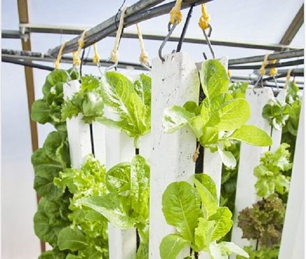

Prodotti dell'azienda

Serra idroponica: 4000$
Agronica: Il sistema di coltivazione ideale.
Agronica è un sistema idroponico verticale che permette di coltivare una grande quantità di piante in uno spazio di terra ridotto. Si compone di elementi circolari legati l'uno con l'altro, ognuno dei quali supporta diversi vasi da 3,5 dotati di di uno scarico e una piccola gabbia per evitare qualsiasi ostacolo nel mezzo di coltura. Ogni pianta è alimentata e drenata separatamente da un sistema di irrigazione completamente integrato che impedisce l'intero rischio di trasmissione di agenti patogeni nell'acqua in eccesso. Per garantire lo stesso quantitativo di luce a tutte le piante vi sono tre lampade a vapori di sodio ad alta pressione da 600 watt, installate verticalmente nei tubi di raffreddamento in vetro, situati al centro del sistema. La potenza di tali luci rende l'uso del riflettore non necessario. La grande apertura nella struttura fornisce un'adeguata circolazione dell'aria.
È necessario posizionare il sistema in una stanza separata, dotata di un ingresso e un aria di scarico sufficiente.
Caratteristiche:
peso: 80 kg;
Completo di irrigatori, scarichi, tubi, ecc.
Rapido montaggio e smontaggio (click-sistema);
alta efficienza;
Ingresso e l'acqua di scarico per ogni impianto;
Dimensioni cm Ø220x215;